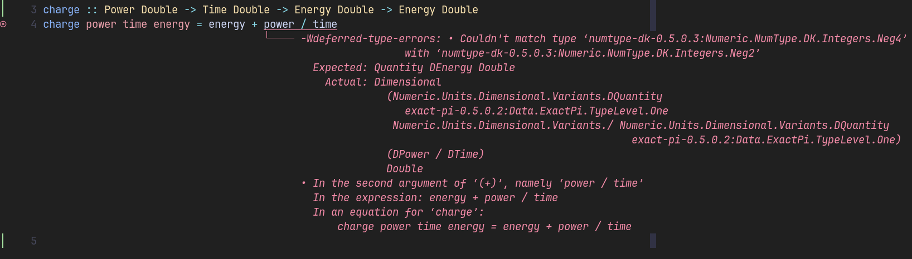

My background isn’t the typical path to becoming a software engineer. I didn’t study computer science. Instead, I earned both a bachelor’s and a master’s degree in Renewable Energy Systems from HTW Berlin. Somehow, that journey led me to become a professional Haskell developer, building distributed power management and delivery systems.
In Europe, the tech job market is dominated by object-oriented languages like Java and C#. Meanwhile, Haskell remains a relatively niche language, often associated with blockchain and finance. Yet, in my experience, Haskell is a perfect fit for the complexities of renewable energy technology, an area that could greatly benefit from the power of functional programming.
In this article, I’ll share my journey into Haskell and explain why I believe it has untapped potential in the renewable energy sector, despite its limited presence in the mainstream job market.
Don’t panic about thermodynamics
During my university years, thermodynamics and energy process engineering were notorious among students. The courses were packed with daunting formulas - far too many to memorize, and far too complex to reference in the heat of an exam.
But one piece of advice from our professor changed everything for me. She encouraged us to truly understand the international system of units (SI), especially by practicing how to juggle and decompose them into their seven base units1.
For instance, one can break down the unit Watt (power)
into its base components: kilogram, metre, and second (W = kg · m² / s³).
With this trick, I could solve problems by letting the units guide me,
rather than relying on rote memorization.
I minimized what I needed to write down and found myself finishing exams with plenty
of time to spare, and scoring perfectly every time.
What I didn’t realise at the time, was that this mindset of letting structure and units guide my reasoning was strikingly similar to type-driven development, a concept I’d only discover years later.
Flexible systems, fragile scripts
Early on during my studies, I started working part-time in one of my university’s research groups. On my first day, I was handed a MATLAB book and, after a week of self-study, began contributing to the development of simulation models and control algorithms for solar storage systems.
These models and algorithms are especially important for renewable energy systems. While traditional fossil power sources tend to be sluggish and operate in predictable, steady ways, renewables are inherently variable. They thrive when supported by flexibility and intelligent control.
The code we wrote was anything but pretty. For example, here’s a function we published that simulates an AC-coupled lithium-ion battery:
function [Ppv, Pbat, Ppvs, Pbs, Pperi, soc] = PerModAC(s, sim, pvmod, Pl, ppv)
SOC_h = s.SOC_h; % Hysteresis threshold for the recharging of the battery
P_AC2BAT_DEV = s.P_AC2BAT_DEV; % Mean stationary deviation of the charging power in W
P_BAT2AC_DEV = s.P_BAT2AC_DEV; % Mean stationary deviation of the discharging power in W
% ...I won’t get into too much detail, but the main issue with scripting languages like Python or MATLAB quickly became apparent:
In this example, the argument ppv is expected to be a vector containing the
normalized DC power output of the PV generator in kW/kWp2.
However, nothing stops the caller of this function from passing in anything they want - even a string. And, dare I say, I’m quite confident that I have never met a MATLAB programmer who knows what a unit test is. Our approach to testing involved generating graphs and comparing them qualitatively with measured data. This process is both time-consuming and error-prone, and it only proves effective if done frequently and validated thoroughly. It relies heavily on human effort rather than leveraging the assistance of automated tools. Without proper safeguards in place, small errors can easily go unnoticed, resulting in fragile code and more difficult troubleshooting.
Why traditional OOP falls short
My first full-time job was writing simulation software for sector-coupled renewable energy systems in Java. Having a compiler that provides some type safety was a huge improvement over my prior MATLAB experiences. To compare, a simulation model for a battery might look something like this3:
public class ACBattery {
ACBatterySpec spec;
// Energy content in watt-hours
double energyWh;
// Constructor omitted for brevity
/**
* @param powerW - The charging power in watts
* @param durationS - The duration in seconds
*/
public void charge(double powerW, double durationS) {
// Implementation omitted for brevity
}
}While callers can no longer pass in completely wrong types, two major issues remain:
- The units are encoded in the variable names.
- Both arguments of the
chargefunction are semantically different, but they have the same type.
A third issue is that object-oriented languages are designed to be stateful, which causes difficulty with concurrency and makes testing very challenging.
This approach is not expressive enough to prevent someone from passing in a value with the wrong unit, or from misusing the arguments in the implementation. As a result, unit tests must be written just to compensate for this lack of type safety.
Technically, it’s possible to define types for each argument:
For example, consider using the unit-api
library to encode units:
public class ACBattery {
ACBatterySpec spec;
Quantity<Energy> energy;
// Constructor omitted for brevity
/**
* @param power Charging power
* @param duration Charging duration
*/
public void charge(Quantity<Power> power,
Quantity<Time> duration) {
Quantity<Energy> energyAdded =
power.multiply(duration).asType(Energy.class);
this.energy = this.energy.add(energyAdded);
}
}This approach is more robust:
- You cannot accidentally pass a length or temperature where a power or time is expected.
- The compiler will prevent you from trying to compose incompatible units.
But in a language like Java, this comes at a cost:
- It means object allocation, runtime conversions and dynamic dispatch, which can introduce significant performance costs.
- Instead of using basic arithmetic operators (
+,-,*, …), you now have to use redefined functions (add,multiply, etc.).
Not to mention a significant increase in verbosity / boilerplate you must maintain. That harms the one thing business cares about: developer productivity.
In my experience working across multiple Java codebases, all of them ultimately relied on primitives for physical quantities, sacrificing safety for simplicity and speed.
Type-Driven Development: The Haskell advantage
Having previously reaped the benefits of letting units guide my reasoning, it didn’t take long for me to start exploring whether type systems could offer the same reliability. About five years ago, I taught myself Haskell, and a year later joined my current employer, who gave me the opportunity to use it professionally in the renewable domain I’m so passionate about.
In Haskell, types are a rigorous framework for representing real-world constraints directly in code.
Here’s how the same charge function’s type signature might look,
using Haskell’s dimensional
library, which “provides statically-checked dimensional arithmetic for physical quantities,
using the 7 SI base dimensions”:
data ACBattery num
= ACBattery
{ spec :: ACBatterySpec
, energy :: Energy num
}
charge :: Fractional num => Power num -> Time num -> ACBattery num -> ACBattery num
charge power time battery = -- Implementation omitted for brevityIf you’re unfamiliar with a functional language like Haskell, this might look cryptic. But bear with me - let’s break it down:
- The function uses a type constraint,
Fractional num, which lets the caller specify the underlying numeric representation. For example,numcould beDoublefor floating-point, or something more precise likePicoorMilliforfixed-point.
A less generic version of this function might look like:
charge :: Power Double -> Time Double -> ACBattery Double -> ACBattery Double
charge power time battery = -- Implementation omitted for brevityThe first and second arguments are the power we supply to the battery and the amount of time we supply it for.
The third argument,
ACBattery, is the battery’s current state. Haskell is stateless by design, so the (immutable) state is passed in, and a new state is returned, making reasoning about code and testing much simpler.The final
-> ACBattery nummeans the function evaluates to the battery’s updated state after charging.
Notice the absence of error-prone, manual unit conversions, or units in the variable names? This aligns perfectly with the Parse, don’t validate principle. By encoding expectations in the types, you ensure that only correctly-formed data enters your core logic. Once data are parsed into these types, you don’t need to check them at runtime, they’re guaranteed by the compiler.
Let’s simplify the function even further, focusing on just energy transformation:
charge :: Power Double -> Time Double -> Energy Double -> Energy Double
charge power time energy =
energy + power * timeInstead of a battery state, this version takes the battery’s energy before charging and evaluates to the energy after charging.
Unlike in Java, where using units libraries requires verbose method calls like add and multiply,
we can use our familiar arithmetic operators directly.
Another advantage is that because dimensional uses Haskell’s newtype declarations,
each quantity is represented internally as its underlying numeric type.
This means that, at runtime, we can expect negligible overhead compared to
plain numeric operations4 - unlike Java’s units libraries,
which rely on object allocation and dynamic dispatch.
When calling the charge function, you specify the units directly:
example = charge chargingPower duration currentEnergy
where
chargingPower = 1 *~ kilo Watt
duration = 30 *~ secondThe dimensional library ensures that only compatible quantities can be composed. If you accidentally swap arguments or use the wrong operation, you won’t get mysterious runtime bugs, you’ll get a clear, immediate type error:

If I multiply power * time instead of trying to divide, the error disappears,
because the units align.
It feels almost magical: Haskell’s type system, together with dimensional,
lets the compiler guide you toward correct implementations.
Unit safety, domain modeling, and strong typing aren’t just academic.
They’re practical tools for building reliable, maintainable software in renewable energy and beyond.
All this time I had no idea: My thermodynamics professor had taught me that Haskell is the perfect fit for renewable energy tech!
Test-Driven Development: Focus on what matters!
I’m a strong advocate for test-driven development (fake it till you make it). In my experience, it’s the best way to ensure high-quality, meaningful test coverage. One major reason people avoid TDD is that it can seem tedious, especially in traditional OOP, where unit tests often compensate for weak type safety. With Haskell, we can write tests that catch far more bugs with far less code, by focusing on what matters: properties and behaviour.
Powerful libraries like QuickCheck,
and its integration with frameworks such as tasty-quickcheck,
allow you to express and test mathematical properties directly,
rather than writing tests for specific cases or edge conditions.
Here’s a hypothetical example:
chargingTest :: TestTree
chargingTest = testGroup "Charging"
[ testProperty "does not exceed maximum capacity"
\(Positive duration) (Positive power) (Small energyDelta) ->
let previousState =
testBattery { energy = maxCapacity testBatterySpec - abs energyDelta }
newState = charge power duration previousState
newEnergy = energy newState
in newEnergy <= maxCapacity testBatterySpec
, testProperty "does not exceed nominal AC charging power"
\(Positive duration) (NonNegative deltaPower) (NonNegative energy) ->
-- Implementation omitted for brevity
-- ...
]With property-based testing, the framework generates a wide variety of (pseudo-)random inputs for you, so you don’t have to hand-craft edge cases. This approach lets you verify that your code upholds the core invariants and physical laws of your domain, rather than just checking a handful of examples.
Credits
Thanks to Alex Drake (who I hack on Haskell clean tech with in our free time) for proof-reading.